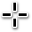
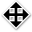

| Top |
Functions
| GdkCursor * | gdk_cursor_new_from_texture () |
| GdkCursor * | gdk_cursor_new_from_name () |
| GdkCursor * | gdk_cursor_get_fallback () |
| const char * | gdk_cursor_get_name () |
| GdkTexture * | gdk_cursor_get_texture () |
| int | gdk_cursor_get_hotspot_x () |
| int | gdk_cursor_get_hotspot_y () |
Description
These functions are used to create and destroy cursors. Cursors are immutable objects, so once you created them, there is no way to modify them later. Create a new cursor when you want to change something about it.
Cursors by themselves are not very interesting, they must be
bound to a window for users to see them. This is done with
gdk_surface_set_cursor() or gdk_surface_set_device_cursor().
Applications will typically use higher-level GTK functions such
as gtk_widget_set_cursor() instead.
Cursors are not bound to a given GdkDisplay, so they can be shared. However, the appearance of cursors may vary when used on different platforms.
There are multiple ways to create cursors. The platform's own cursors
can be created with gdk_cursor_new_from_name(). That function lists
the commonly available names that are shared with the CSS specification.
Other names may be available, depending on the platform in use. On some
platforms, what images are used for named cursors may be influenced by
the cursor theme.
Another option to create a cursor is to use gdk_cursor_new_from_texture()
and provide an image to use for the cursor.
To ease work with unsupported cursors, a fallback cursor can be provided. If a GdkSurface cannot use a cursor because of the reasons mentioned above, it will try the fallback cursor. Fallback cursors can themselves have fallback cursors again, so it is possible to provide a chain of progressively easier to support cursors. If none of the provided cursors can be supported, the default cursor will be the ultimate fallback.
Functions
gdk_cursor_new_from_texture ()
GdkCursor * gdk_cursor_new_from_texture (GdkTexture *texture,int hotspot_x,int hotspot_y,GdkCursor *fallback);
Creates a new cursor from a GdkTexture.
Parameters
texture |
the texture providing the pixel data |
|
hotspot_x |
the horizontal offset of the “hotspot” of the cursor |
|
hotspot_y |
the vertical offset of the “hotspot” of the cursor |
|
fallback |
|
[allow-none] |
gdk_cursor_new_from_name ()
GdkCursor * gdk_cursor_new_from_name (const char *name,GdkCursor *fallback);
Creates a new cursor by looking up name
in the current cursor
theme.
A recommended set of cursor names that will work across different platforms can be found in the CSS specification:
"none"
"default"
"help"
"pointer"
"context-menu"
"progress"
"wait"
 "cell"
"crosshair"
"text"
"vertical-text"
"alias"
"copy"
"no-drop"
 "move"
"not-allowed"
"grab"
"grabbing"
"all-scroll"
 "col-resize"
"col-resize" "row-resize"
"row-resize""n-resize"
"e-resize"
"s-resize"
"w-resize"
"ne-resize"
"nw-resize"
"sw-resize"
"se-resize"
 "ew-resize"
"ew-resize""ns-resize"
"nesw-resize"
 "nwse-resize"
"nwse-resize""zoom-in"
"zoom-out"
Parameters
name |
the name of the cursor |
|
fallback |
|
[allow-none] |
gdk_cursor_get_fallback ()
GdkCursor *
gdk_cursor_get_fallback (GdkCursor *cursor);
Returns the fallback for this cursor
. The fallback will be used if this
cursor is not available on a given GdkDisplay.
For named cursors, this can happen when using nonstandard names or when using an incomplete cursor theme. For textured cursors, this can happen when the texture is too large or when the GdkDisplay it is used on does not support textured cursors.
gdk_cursor_get_name ()
const char *
gdk_cursor_get_name (GdkCursor *cursor);
Returns the name of the cursor. If the cursor is not a named cursor, NULL
will be returned.
gdk_cursor_get_texture ()
GdkTexture *
gdk_cursor_get_texture (GdkCursor *cursor);
Returns the texture for the cursor. If the cursor is a named cursor, NULL
will be returned.
gdk_cursor_get_hotspot_x ()
int
gdk_cursor_get_hotspot_x (GdkCursor *cursor);
Returns the horizontal offset of the hotspot. The hotspot indicates the pixel that will be directly above the cursor.
Note that named cursors may have a nonzero hotspot, but this function
will only return the hotspot position for cursors created with
gdk_cursor_new_from_texture().
gdk_cursor_get_hotspot_y ()
int
gdk_cursor_get_hotspot_y (GdkCursor *cursor);
Returns the vertical offset of the hotspot. The hotspot indicates the pixel that will be directly above the cursor.
Note that named cursors may have a nonzero hotspot, but this function
will only return the hotspot position for cursors created with
gdk_cursor_new_from_texture().
Types and Values
GdkCursor
typedef struct _GdkCursor GdkCursor;
A GdkCursor represents a cursor. Its contents are private.
Cursors are immutable objects, so they can not change after they have been constructed.
Property Details
The “fallback” property
“fallback” GdkCursor *
Cursor image to fall back to if this cursor cannot be displayed.
Owner: GdkCursor
Flags: Read / Write / Construct Only
The “hotspot-x” property
“hotspot-x” int
Horizontal offset of the cursor hotspot.
Owner: GdkCursor
Flags: Read / Write / Construct Only
Allowed values: >= 0
Default value: 0
The “hotspot-y” property
“hotspot-y” int
Vertical offset of the cursor hotspot.
Owner: GdkCursor
Flags: Read / Write / Construct Only
Allowed values: >= 0
Default value: 0
The “name” property
“name” char *
Name of this cursor.
Owner: GdkCursor
Flags: Read / Write / Construct Only
Default value: NULL
The “texture” property
“texture” GdkTexture *
The texture displayed by this cursor.
Owner: GdkCursor
Flags: Read / Write / Construct Only